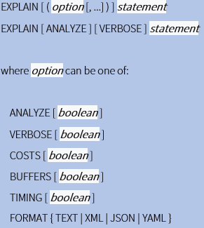

Tugas 2 Basis Data II
Evaluation Plan (rencana evaluasi) mencakup informasi tentang apa yang akan dilakukan evaluasi (apa yang akan dievaluasi, tujuan evaluasi dan pertanyaan evaluasi kunci) dan bagaimana itu akan dilakukan (data apa yang akan dikumpulkan, bagaimana dan kapan, bagaimana data akan dianalisis, dan bagaimana serta kapan hasil akan dilaporkan).
Sebagian besar sistem database menyediakan cara untuk melihat rencana evaluasi yang dipilih untuk menjalankan kueri tertentu. Biasanya paling baik menggunakan GUI yang disediakan dengan sistem database untuk melihat rencana evaluasi. Namun, jika Anda menggunakan antarmuka baris perintah, banyak database mendukung variasi dari perintah "explain <query>", yang menampilkan rencana eksekusi yang dipilih untuk kueri <query> yang ditentukan. Sintaks yang tepat bervariasi dengan database yang berbeda.
MySQL menggunakan sintaks explain
Ketika mengeksekusi suatu query, MySQL menyusun rencana apa saja yang akan dilakukan untuk mengeksekusi query tersbut. Rencana ini tertuang dalam Query Execution Plan (QEP). Dengan membaca QEP tersebut kita dapat menganalisa efektifitas suatu query. QEP ini dapat kita lihat dengan menggunakan statement Explain, misal:
QEP ini menyajikan informasi detail baik untuk query sederhana maupun query yang kompleks yang melibatkan banyak tabel. Dengan mempelajari dan memahami setiap bagian dari QEP ini, kita dapat menganalisa bagian query mana yang perlu untuk dioptimasi.
EXPLAIN menunjukkan rencana eksekusi suatu pernyataan.
Perintah ini menampilkan rencana eksekusi yang dibuat oleh perencana PostgreSQL untuk pernyataan yang disediakan. Rencana eksekusi menunjukkan bagaimana tabel yang direferensikan oleh pernyataan akan dipindai - dengan pemindaian sekuensial biasa, pemindaian indeks, dll. - dan jika beberapa tabel direferensikan, algoritme gabungan apa yang akan digunakan untuk menyatukan baris yang diperlukan dari masing-masing tabel masukan.
Bagian paling penting dari tampilan adalah perkiraan biaya eksekusi pernyataan, yang merupakan tebakan perencana berapa lama waktu yang dibutuhkan untuk menjalankan pernyataan (diukur dalam unit biaya yang sewenang-wenang, tetapi secara konvensional pengambilan halaman disk yang berarti). Ada dua angka yang ditampilkan: biaya awal sebelum baris pertama dapat dikembalikan, dan biaya total untuk mengembalikan semua baris. Untuk sebagian besar kueri, biaya total adalah yang terpenting, tetapi dalam konteks seperti subkueri di EXISTS, perencana akan memilih biaya permulaan terkecil daripada total biaya terkecil (karena pelaksana akan berhenti setelah mendapatkan satu baris). Juga, jika Anda membatasi jumlah baris untuk dikembalikan dengan klausa LIMIT, perencana membuat interpolasi yang sesuai antara biaya titik akhir untuk memperkirakan paket mana yang benar-benar termurah.
Opsi ANALYZE menyebabkan pernyataan benar-benar dieksekusi, tidak hanya direncanakan. Kemudian statistik run time aktual ditambahkan ke tampilan, termasuk total waktu berlalu yang dihabiskan dalam setiap node rencana (dalam milidetik) dan jumlah total baris yang sebenarnya dikembalikan. Ini berguna untuk melihat apakah perkiraan perencana mendekati kenyataan.
Cara SQL Server memilih plan terbaik adalah dengan menghitung cost estimation. Ketika optimizer membuat execution plan, ia melakukan parameter sniffing untuk mengetahui nilai-nilai parameternya. Ini bukan masalah; sebenarnya diperlukan untuk membuat plan yang terbaik. Masalah muncul ketika query menggunakan plan yang dibuat sebelumnya yang dioptimalkan untuk distribusi data yang berbeda. Dalam kebanyakan kasus database workload bersifat homogen sehingga parameter sniffing tidak akan menjadi masalah; tetapi pada sejumlah kecil kasus ini menjadi masalah dan hasilnya bisa dramatis.
SQL Server membutuhkan perintah set showplan_text on untuk dieksekusi sebelum mengirimkan kueri; kemudian, saat kueri dikirim, alih-alih mengeksekusi kueri, rencana evaluasi ditampilkan.
Pengoptimal Kueri SQL Server adalah pengoptimal berbasis biaya. Ini menganalisis sejumlah rencana eksekusi kandidat untuk kueri tertentu, memperkirakan biaya masing-masing rencana ini dan memilih rencana dengan biaya terendah dari pilihan yang dipertimbangkan. Memang, karena Pengoptimal Kueri tidak dapat mempertimbangkan setiap rencana yang mungkin untuk setiap kueri, ia sebenarnya harus melakukan tindakan penyeimbangan berbasis biaya, dengan mempertimbangkan biaya untuk menemukan rencana potensial dan biaya rencana itu sendiri. Tabel berikut menunjukkan pernyataan berbeda yang dapat Anda gunakan untuk mendapatkan perkiraan atau rencana eksekusi aktual dalam format teks, grafik, atau XML. Perhatikan bahwa ketika Anda menjalankan salah satu pernyataan ini menggunakan klausa ON, ini akan berlaku untuk semua pernyataan berikutnya hingga opsi secara manual disetel ke OFF lagi.
| Esimated Execution Plan | Actual Exection Plan | |
|---|---|---|
| Text Plan | SET SHOWPLAN_TEXT ON SET SHOWPLAN_ALL ON |
SET STATISTICS PROFILE ON |
| Grapich Plan | Management Studio | Management Studio |
| XML Plan | SET SHOWPLAN_XML ON | SET STATISTICS XML ON |
Seperti yang Anda lihat di Tabel 1-1, ada dua perintah untuk mendapatkan perkiraan rencana teks; SETEL SHOWPLAN_TEXT dan SET SHOWPLAN_ALL. Kedua pernyataan tersebut menunjukkan perkiraan rencana pelaksanaan, tetapi SET SHOWPLAN_ALL juga menunjukkan beberapa informasi tambahan, termasuk perkiraan jumlah baris, perkiraan biaya CPU, perkiraan biaya I / O, dan perkiraan biaya operator. Namun, versi terbaru dari Buku Daring, termasuk SQL Server 2008 R2, menunjukkan bahwa semua versi teks rencana eksekusi akan ditinggalkan di versi mendatang dari SQL Server.
Rencana evaluasi kueri (Oracle menyebutnya sebagai "rencana eksekusi") adalah program untuk mesin abstrak (juru bahasa) di dalam DBMS. Ini dihasilkan oleh pengoptimal kueri. Nama lainnya adalah "rencana akses" (DBMS harus memutuskan bagaimana mengakses baris, misalnya apakah akan menggunakan indeks). Di kebanyakan sistem, query evaluation plans (QEPs) mirip dengan ekspresi aljabar relasional (sangat bergantung pada sistem).
Cara Melihat QEP Oracle:
$ORACLE_HOME/rdbms/admin/utlxplan.sql
SET AUTOTRACE ON EXPLAIN
Jika seseorang keluar dari SQL*Plus, pengaturan AUTOTRACE dilupakan, tetapi PLAN_TABLE masih ada.
Proses Evaluaion Plans:
Oracle menggunakan explain plan for. Namun, perintah tersebut menyimpan rencana yang dihasilkan dalam tabel yang disebut tabel rencana, alih-alih menampilkannya. Query “select * from table (dbms xplan.display);” menampilkan rencana yang disimpan.
Brass, Stevan. 2004. Query Elatuation. Jerman: Universitas Halle. https://bit.ly/3i4RNGL.
Nevarez, Benjamin. 2011. The SQL Server Query Optimizer. Redgate: https://bit.ly/3mTNe5S.
Silberschatz , Abraham, dkk. 2020. Database-System-Concepts-7th-Edition. New York: McGraw-Hill Education.
Sudono, Anugerah Sentot. 2018. Cara-cara untuk mengoreksi SQL Server Parameter Sniffing.Blog: https://bit.ly/3mVUga2.
Unknown. 2020. Optimasi Query MySQL dan MariaDB – eBook. Jagowebdev: https://bit.ly/364UCW4.
Unknown. tth. Evaluation Plan. Better Evaluation: https://bit.ly/305Sn12.
Unknown. tth. Explain. The PostgreSQL Global Development Group: https://bit.ly/2G7dby2.